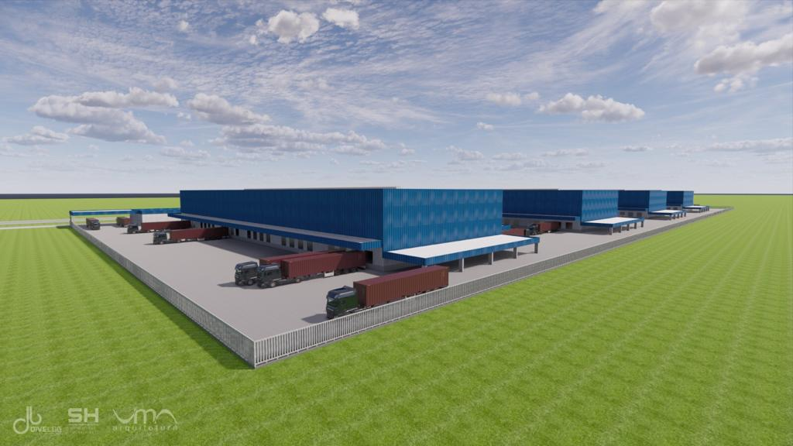
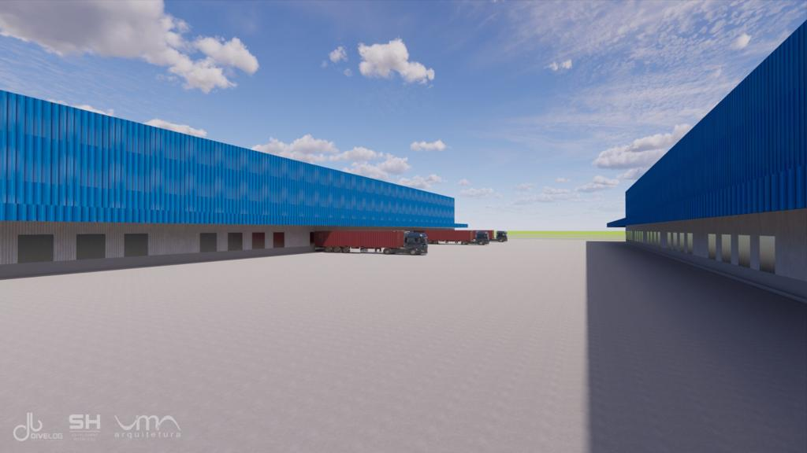
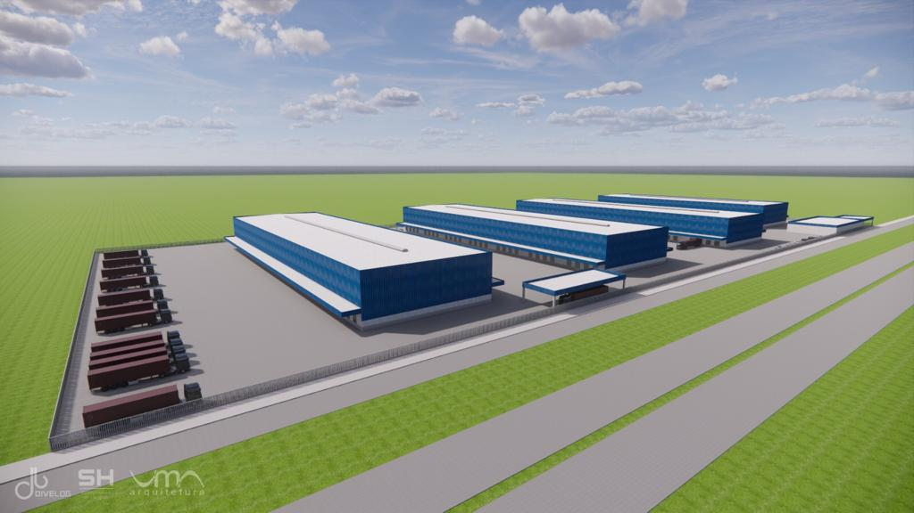
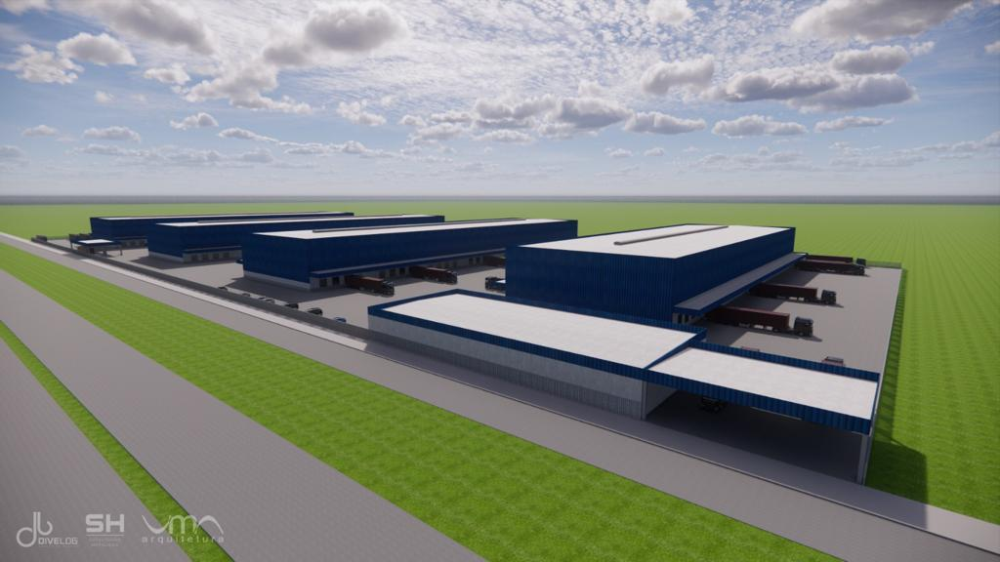
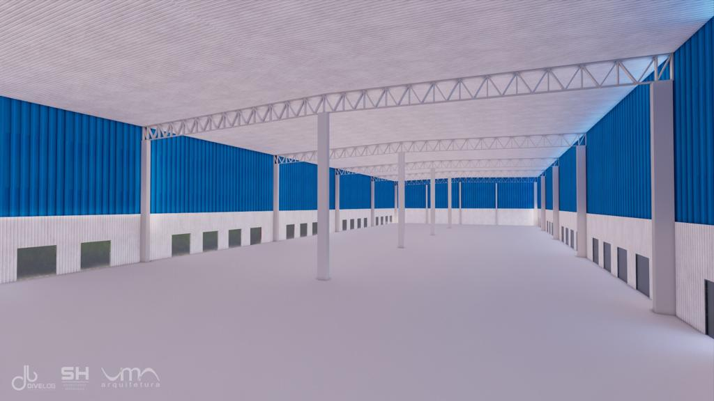
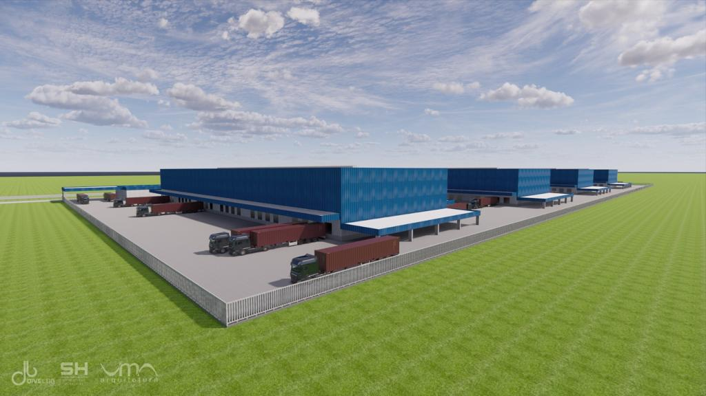
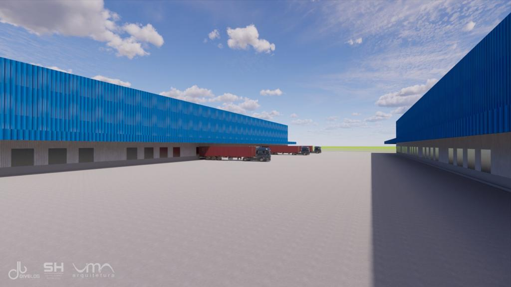
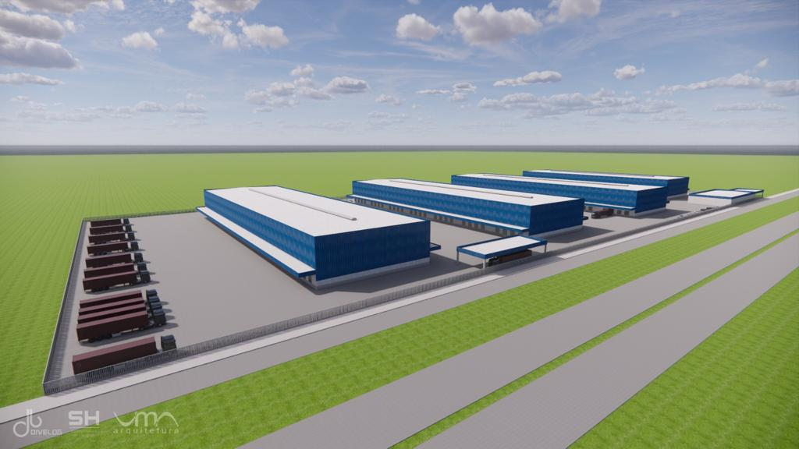
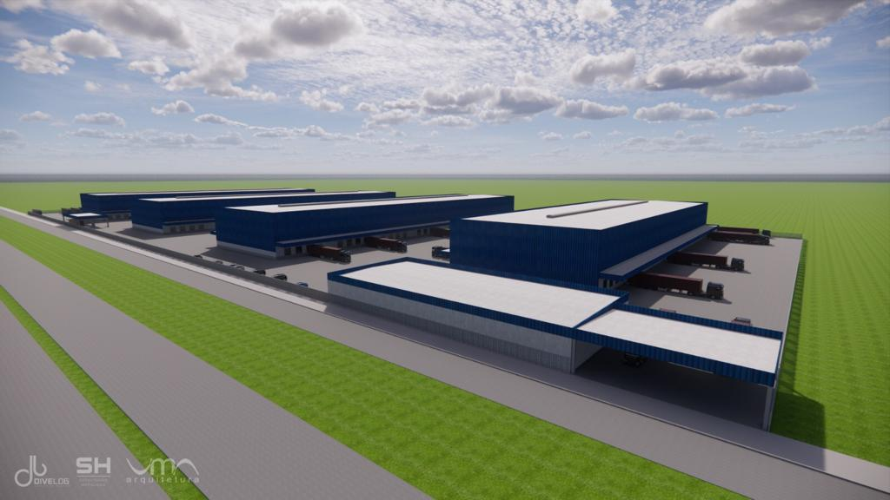
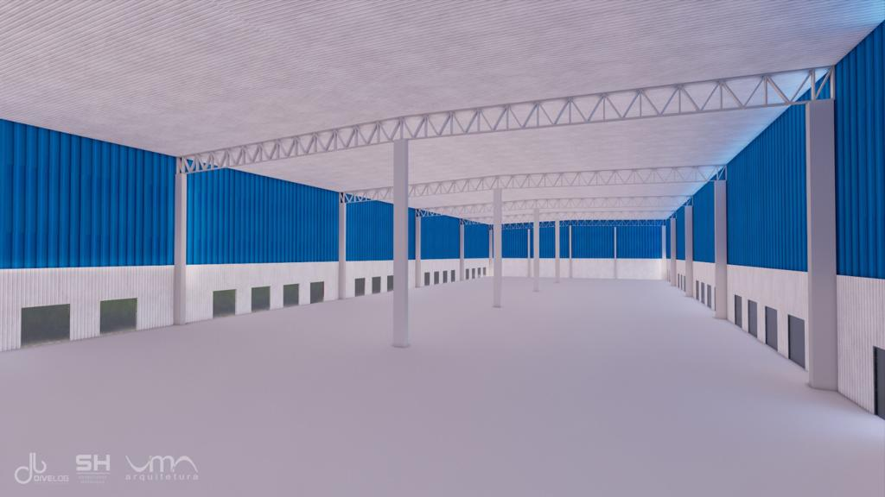

O projeto de cross docking desenvolvido pela Divelog e a SH Estruturas Metálicas chamou a atenção de quem circulou pelos movimentados corredores da Transposul, na semana passada. Realizada na Fiergs, em Porto Alegre, a 23ª edição da feira atraiu mais de 20 mil visitantes e movimentou mais de R$ 1,5 bilhão em negócios. De acordo com Junior Cavalca, diretor de novos negócios da Divelog, a visibilidade do evento — considerado o maior da região sul do país — foi um dos motivos que fez as duas empresas anunciarem o empreendimento durante a feira. “Recebemos muitos executivos e lideranças interessadas no nosso projeto, querendo saber mais detalhes sobre o empreendimento. Essas feiras são fundamentais pelos negócios gerados, mas também pelo relacionamento e networking”, avalia.
Assinado pela Divelog e a SH Estruturas Metálicas, ambas empresas localizadas em Novo Hamburgo/RS, o projeto prevê 34 mil metros quadrados de área construída entre as BRs 386 e 116, na Região Metropolitana, a 16 quilômetros de Porto Alegre e a 25 quilômetros do Vale do Sinos. Com previsão de entrega para final de 2024 e início de 2025, o condomínio logístico terá pé direito de 10 a 12 metros, permitindo colocar operações logísticas de clientes das transportadoras dentro do empreendimento. Além de área de manutenção de frota e lavagem e uma bomba de diesel compartilhada. O projeto também estipula bolsões de estacionamento de veículos e deve receber investimentos na ordem dos R$ 50 milhões.
 









Conforme Cavalca, o lançamento do cross docking traz uma série de benefícios. “Em primeiro lugar, ele reduz significativamente os tempos de espera e os custos associados ao armazenamento. Além disso, ao eliminar a necessidade de estocagem, as empresas podem reduzir os riscos de danos aos produtos, perdas por obsolescência ou deterioração e os gastos com espaços de armazenamento”, destaca. Este tipo de lançamento permite, também, maior agilidade no atendimento aos clientes, uma vez que os produtos podem ser enviados diretamente dos fornecedores para os pontos de venda ou clientes finais. “Com rapidez e eficiência”, frisa.